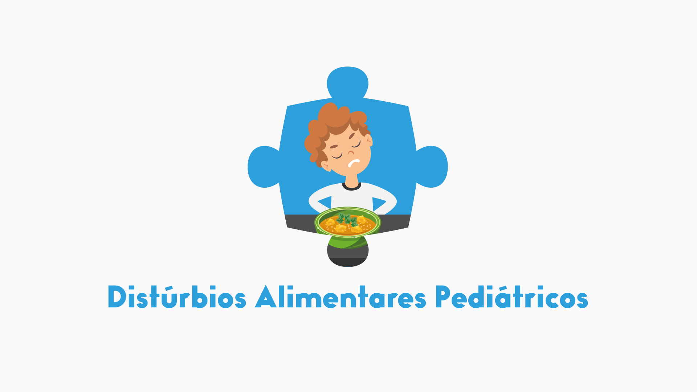
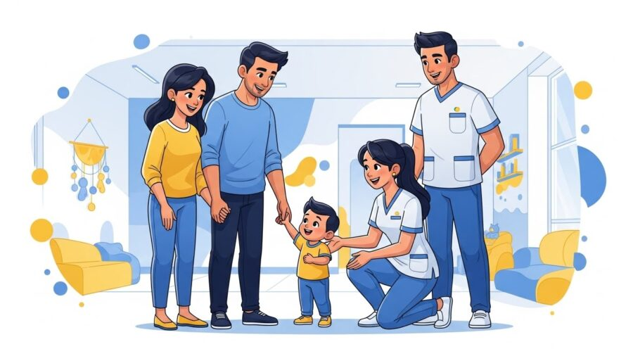

Dia a Dia da Família
Dia a Dia da Família
1 de dezembro de 2025

Quando uma família começa a suspeitar que algo diferente está acontecendo no desenvolvimento do seu filho, é como se um mundo inteiro se abrisse, repleto de dúvidas, receios, culpa, insegurança e medo do que o futuro reserva. Ao mesmo tempo, nasce também um desejo profundo de fazer o melhor, de buscar ajuda especializada e garantir que a criança tenha todas as oportunidades possíveis para se desenvolver com autonomia, bem-estar e dignidade.

É nesse encontro entre a preocupação e o amor que a trajetória de uma criança com suspeita de TEA realmente começa. E é nesse momento que acolhimento, orientação profissional e a força da família se tornam fatores decisivos para o progresso.
No HD 360 Moinhos, referência como CLÍNICA DE AUTISMO EM PORTO ALEGRE, acompanhamos diariamente famílias que chegam cheias de dúvidas, mas que, com o suporte adequado, redescobrem a esperança e testemunham transformações reais.
Este artigo foi criado para orientar você que está vivendo esse começo, ou que está justamente buscando caminhos seguros para entender a evolução do seu filho. Aqui, você vai compreender:
A suspeita de TEA não é um diagnóstico. Mas é um alerta.
E ignorá-lo pode atrasar anos de desenvolvimento.
É justamente aqui que muitas famílias ficam paralisadas. O medo de “rotular”, a dúvida sobre “ser cedo demais” ou até a insegurança sobre “estar exagerando” faz muitos pais esperarem tempo demais. Porém, o que a ciência já provou é simples:
Quanto mais cedo iniciamos a intervenção, mais resultados positivos a criança alcança.
E essa intervenção não começa apenas com terapia.
Ela começa com acolhimento da família, com escuta, com orientação correta e com um ambiente emocional seguro para que os pais entendam o que está acontecendo, e o que fazer a partir de agora.
Acolher não é apenas receber a família na clínica.
Acolher é:
No HD 360 Moinhos, isso é parte da essência do nosso trabalho. Não existe atendimento frio, distante ou mecânico. Existe presença, orientação e parceria.
A evolução de uma criança com TEA não acontece apenas dentro da terapia.
Ela acontece no dia a dia:
Por isso, a família não é coadjuvante.
A família é protagonista.
E isso não tem a ver com “cobrança”. Tem a ver com potência.
A ciência demonstra:
Crianças cujas famílias recebem treinamento, orientação e suporte apresentam ganhos muito maiores em comunicação, autonomia, comportamento e habilidades sociais.
É por isso que, na nossa CLÍNICA DE AUTISMO EM PORTO ALEGRE, toda intervenção envolve a família desde o primeiro dia. A família aprende, participa, entende e aplica no cotidiano. Assim, cada pequeno momento vira uma oportunidade de evolução.
Quando os pais suspeitam de TEA, o pior cenário é tentar “adivinhar sozinho” ou se perder em conselhos de internet.
A orientação certa precisa vir de profissionais experientes que compreendem profundamente as particularidades do espectro.
No HD 360 Moinhos, trabalhamos com uma equipe completa:
O objetivo não é apenas intervir, mas construir um olhar global da criança.
Uma orientação profissional adequada permite:
Essa união entre acolhimento + ciência é o que torna o HD 360 Moinhos uma referência em CLÍNICA DE AUTISMO EM PORTO ALEGRE.
Aqui no HD 360 Moinhos, trabalhamos com três pilares fundamentais:
Desde o primeiro contato, a família recebe orientação clara, sensível e humanizada. Acolhemos as emoções, as dúvidas e cada história.
Os pais são ensinados a:
Isso faz com que os ganhos da terapia se expandam para toda a rotina da criança.
A família nunca caminha sozinha.
Há acompanhamento, reuniões, feedbacks e ajustes constantes.
Uma criança evolui muito mais quando seus pais sabem exatamente o que fazer e sentem que não estão sozinhos.
Se você suspeita de TEA, o passo mais importante é não esperar.
A evolução começa com:
E tudo isso você encontra no HD 360 Moinhos, uma CLÍNICA DE AUTISMO EM PORTO ALEGRE preparada para orientar sua família desde o primeiro encontro.
Agende uma avaliação no HD 360 Moinhos e dê ao seu filho a chance de evoluir no tempo certo.
A transformação começa quando a família encontra o caminho certo, e caminha acompanhada.
Leia também